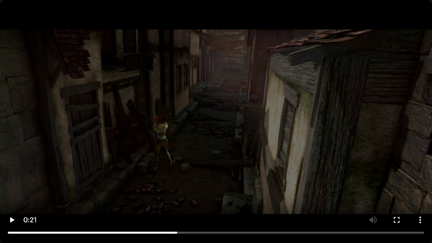
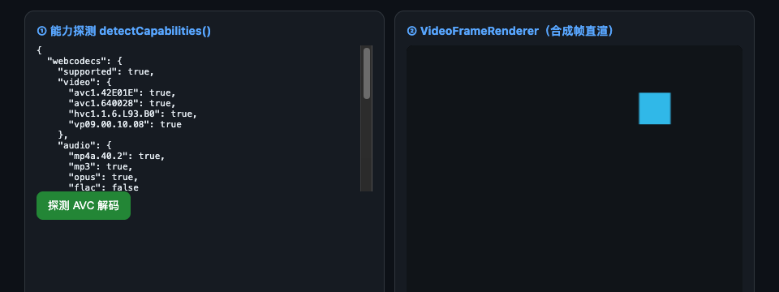
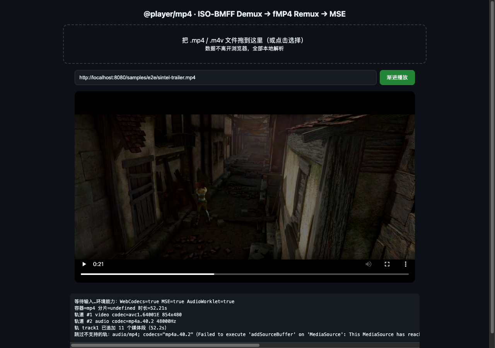

原生媒体能力
WebCodecs 解码与 Canvas 渲染，AudioWorklet 调度声音；支持的媒体可走 MSE 路径。
PUREPLAY / BROWSER MEDIA ENGINE
v0.1.0 · npm / jsDelivr / GitHub Pages从容器解析到画面与声音。纯前端、纯 ESM，让 WebCodecs、Canvas、AudioWorklet 与 MSE 各司其职。本地文件不离开本机；外部 URL 按请求访问原源。

BUILT FOR THE WEB
不依赖 UI 框架或第三方运行时播放器库。模块按需导入，浏览器能力决定实际播放路径。
WebCodecs 解码与 Canvas 渲染，AudioWorklet 调度声音；支持的媒体可走 MSE 路径。
Blob 与 HTTP Range 数据源。拖入文件在浏览器内解析，远程媒体按需读取。
探测、轨道、样本、时钟、seek 与销毁接口。解复用、播放与 UI 分层协作。
ONE PIPELINE
媒体核心使用整数微秒时间基，统一输入、解复用、解码与呈现边界。实际选路由容器与编码支持决定。
File / Range / StreamContainer / DemuxWebCodecs / MSECanvas / AudioWorkletEXPLORE THE MODULES
完整播放器、容器解析器和协议实验分别展示自己的真实能力。演示可用不等于支持所有编码。
START WITHOUT A BUILD
本地体验需要 Node.js ≥ 22；代码集成支持 npm、jsDelivr CDN 与 GitHub Pages。无需构建步骤。
npm i pure-webcodecs-player
# 从仓库运行演示
npm run demo
# 打开 http://localhost:8080/site/demo/
# 代码集成（完整用法见 README）
import { createPlayer, registerDemuxer } from 'pure-webcodecs-player';
import * as mp4Mod from 'pure-webcodecs-player/mp4';
registerDemuxer(mp4Mod);
const player = await createPlayer({ url, canvas });
await player.load();
await player.play();以下为仓库已有端到端运行证据，不作为当前浏览器性能或兼容性承诺。测试命令与素材要求见 测试说明。

